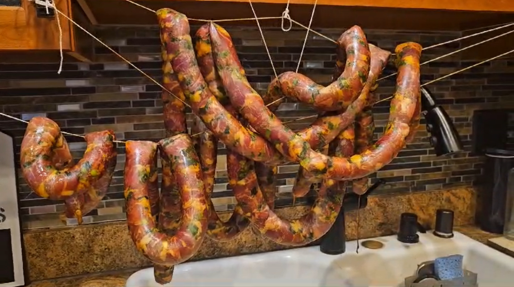

Los Chorizos de Bernardo

Description
Chorizos are a staple of Colombian cuisine.
My family has been making homemade chorizos since
before my parents were even alive. This recipe is
that of my abuelo, Bernardo. Around Christmas time,
the family gets together and makes feet upon feet
of Colombian chorizos. Pairs well with El Ají de La Abuela
Ingredients
- 10lbs of pork (shoulder/butt, 1/4 cubes)
- green onions (6-8 bunches)
- cumin seeds (whole) to taste
- Bijol or achiote (2tsp)
- salt to taste
- 3 shots of Ron de Medellin or Ron de Caldes
- 2lbs of casing (not synthetic)
- cooking twine
Steps
- In a large roasting pan, mix pork, finely chopped green onions, ground cumin, Bijol/achiote, and salt.
- Fold mixture, allowing all ingredients to blend.
- Add rum and continue to blend.
- Let it sit for 30 minutes.
- Begin stuffing mixture into casing.
- Knot or tie at desired length.
- Poke with a needle to allow air to flow.
- **Soak casing in cold water and lemon while the stuffing is being prepared. Once you are ready to begin to stuff, rinse the casing and run cold water through it, making sure its clean.**
- Hang chorizos to dry for 2-3 days. Refrigerate.
Home